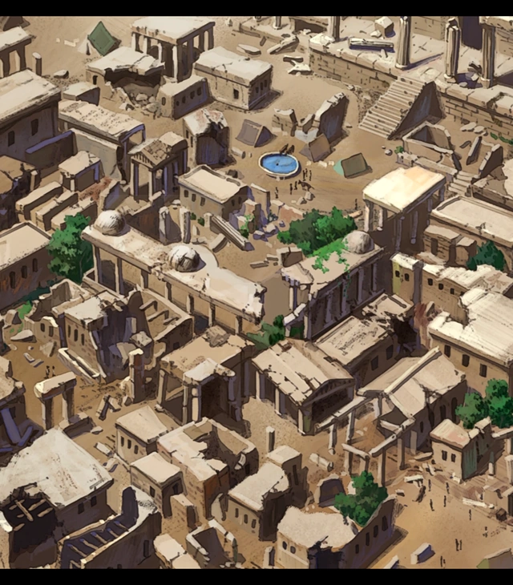

Xerxes
Xerxes era un país antiguo que existía en el gran desierto al este de Amestris cuatrocientos años antes del inicio de la serie. A pesar de haber tenido una sociedad muy avanzada para su época, toda la población de Xerxes fue borrada misteriosamente en una sola noche, dejando sólo ruinas.
Historia
Xerxes fue relativamente pacífica y próspera a pesar de las duras condiciones del desierto que lo rodeaba y, en el momento de su repentina desaparición, tenía una población de más de un millón de personas. Xerxes parece haber tenido una cultura marcadamente intelectual que fomenta el lenguaje escrito, así como los estudios filosóficos y alquímicos. Aunque la esclavitud parece haber sido una práctica común, era posible para los esclavos salir de la esclavitud mediante la educación, incluso yendo tan lejos como para convertirse en miembros de la alta sociedad. Xerxes era también una monarquía centralizada, con un corte real de gobierno de la capital y una ciudad fortificada en el centro del país. En su mayor parte, las personas de Xerxes se caracterizaban por tener la tez clara, así como un color dorado de cabello y ojos.
En la continuidad actual, las ruinas de Xerxes consisten principalmente de los restos en descomposición de un castillo del rey y de la ciudad capital, el famoso, sin embargo, el sitio remoto actúa como un oasis para los viajeros que se aventuran a través del Gran Desierto de Amestris a Xing o viceversa. Además, las ruinas sirven como un refugio para un número de Ishvalanos que se han refugiado en los años posteriores a la Guerra Civil de Ishval.
Destrucción de xerxes
Cuando un destacado alquimista en la corte del rey creó un homúnculo con amplios conocimientos arcanos de la alquimia, el monarca vio su oportunidad de trascender de su muerte terrible e inevitable a través de la inmortalidad. La criatura accedió a convertirse en cónsul principal de la corte real en el tema de la alquimia basada en la inmortalidad y persuadió al rey para construir una matriz que abarque todo Xerxes y utilizar todas las almas de la gente asesinada para crear una fuente de inmortalidad. Una zanja grande se fue excavando de acuerdo a las especificaciones del homúnculo, mientras a los ciudadanos se les dio la impresión de que su rey obediente había ordenado la construcción de canales de riego para defender sus cultivos contra la sequía.
A partir de la norteña ciudad de Bonath, cinco ciudades alrededor del círculo fueron destruidas (las casas incendiadas y la gente y sus ganados, asesinados) tallando una cresta de la sangre en la tierra. Sin embargo, cuando llegó el momento de activar el círculo, se hizo evidente de inmediato que el homúnculo había engañado a la corte. Por haber dejado la configuración de la matriz alrededor de sí mismo y su cuidador en vez de alrededor del rey, como había afirmado haberlo hecho, el homúnculo quien fue capaz de robar hábilmente la vida de los ciudadanos de Xerxes, la realeza y su creador para él y los utiliza para crear un par de cuerpos inmortales, cada uno viviendo con la mitad de las almas de la nación. Toda la población de Xerxes fue eliminada al instante, dejando sólo las dos inmortales para sobrevivir como piedras filosofales humanas. Los dos se separaron, dejando al país muerto de Xerxes atrás.